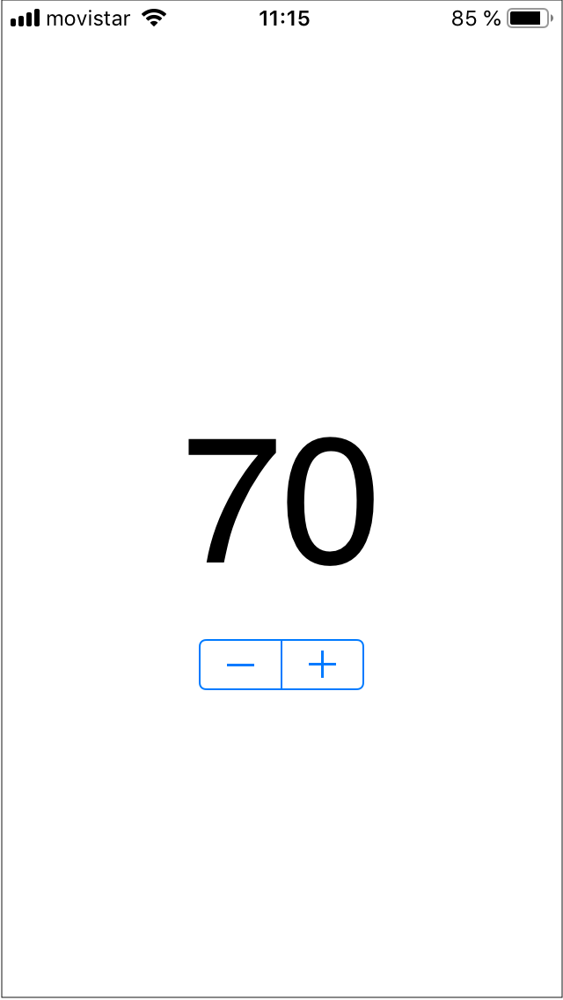

Práctica 3: iCloud y CloudKit¶
iCloud clave-valor¶
-
Descarga la app
iCloudKeyValueen la que se muestra un controller de tipo Stepper y una etiqueta con un número que va cambiando según se pulsa el controller. -
Comprueba que si matas la app se pierde el valor introducido.
-
Modifica la app, añadiendo código para que cada vez que se cambie el número se guarde en iCloud clave-valor. Implementa también una notificación para que si se modifica el valor en otro dispositivo se actualice en el dispositivo actual. Puedes probarlo modificando el valor en el simulador y deberá actualizarse en un dispositivo físico en el que estés logeado con el mismo Apple ID (al revés no funciona: si cambias el valor en el dispositivo físico, no se actualiza en el simulador, porque no funciona el
NotificationCenter).

ToDoList en CloudKit¶

- Configuración de la app:
- Seguimos trabajando con el proyecto
ToDoListy el bundle IDes.ua.mastermoviles.ToDoListy el perfil de aprovisionamientoMaster Moviles ToDoList(lo hemos actualizado para que incluya el permiso de acceso a CloudKit). - Actualiza en Xcode el permiso para utilizar CloudKit y el
contenedor
iCloud.es.ua.mastermoviles.ToDoList.
- Seguimos trabajando con el proyecto
- Desarrollo de la práctica:
- Añade el código necesario para que las tareas pendientes se guarden y recuperen de la base de datos privada de CloudKit.
- (Opcional): Utiliza la base de datos pública para publicar tareas compartidas por todos los usuarios de la app. Al añadir una tarea debes permitir la opción de hacerlo en la base de datos pública. Muestra el texto de las tareas públicas en un color diferente en el listado de tareas.
- (Opcional): Añade una funcionalidad en la que se recargue la tabla con los datos de iCloud cuando se tire de la tabla hacia abajo.
Pista para actualizar la tabla¶
- Los callbacks en los que se reciben los resultados de las queries son asíncronos y se procesan en hilos secundarios.
- Si actualizamos los datos de la tabla en un callback de este tipo, la interfaz de usuario no se refrescará hasta que el usuario no interactúe con la tabla.
- Se puede forzar a ejecutar la actualización de los datos de la tabla en
el hijo principal con este código en algún lugar del
ToDoListTableViewController:
1 2 3 | |